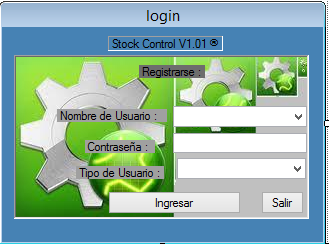
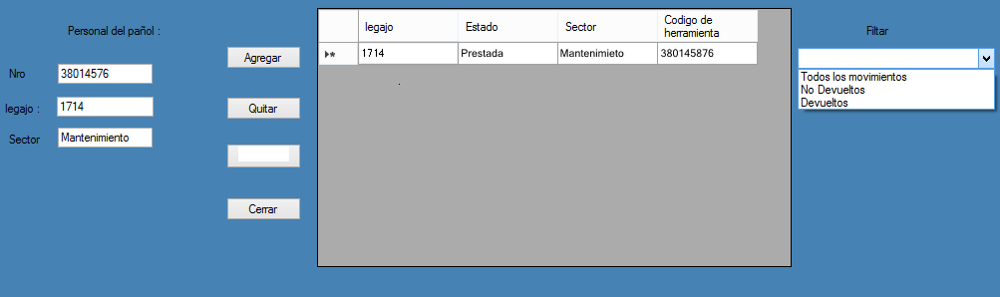

El sistema StockControl posee un login para el ingreso del personal al mismo , el cual esta dividido en Administrador , Pañoleros ,supervisor y un acceso a la gerencia para la revision de los registros que el sistema almacena , cada uno con sus restricciones de uso , permitiendo un acceso rapido a la informacion
En la ventana de carga de datos se tiene una clara vista del estado de los elementos prestados , al tener ademas un filtro que selecciona entre elementos prestados , elementos devueltos y no devueltos , lo que permite un rapido accionar al realizar un reclamo en el caso de un elemento no devuelto
